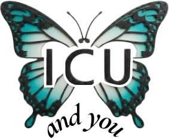

Intensive Care Education
A comprehensive intensive care education programme, a topic at a time — Coffs Harbour Health Campus
New here? About this site · Subscribe to the weekly newsletter · You asked · Your suggestions · Contact me
This site supports organ donation registration — register your decision.
This week
Roughly six to twelve. The toddler could not tell you what was wrong; this one can, and has learned not to — because they are being brave, because it might mean a needle, or because the parent is in the room and they are protecting them. The physiology stops being exotic at about this age, and the history becomes the hard part.
A new series. One topic stripped to the ten points that carry the most weight — no discussion, no argument, no stories. Five minutes, and deliberately not enough.
Roughly six to twelve years. Asthma, trauma and diabetic ketoacidosis; the myocarditis wearing a gastroenteritis costume; ingestions that have stopped being accidental; and the things they will not say.
The most repeated sentence in paediatrics, and the one that quietly expires around school age without anybody saying when. Yes, No and Maybe — and the reason the changeover is not a birthday.
Six things, and the word is the place they should be. Send the parent out, the chest, the hip when they say knee, out of proportion to the film, overdose is deliberate now, and listen for what they will not say.
A new series. The cricoid and uncuffed tubes, fluid rate and cerebral oedema in DKA, the rule of nines, cooling after cardiac arrest, and nil by mouth from midnight — where each belief came from, what the evidence shows, and a verdict that is graded rather than gleeful.
Twenty clues on the school-age child — asthma, trauma and ketoacidosis, a dead Edwardian physician, a boy who never grew up, and an admission almost nobody makes out loud.
Five questions. The quiet chest, a child worse than his film explains, myocarditis wearing a gastroenteritis costume, knee pain that is hip pain, and the deliberate ingestion that is not just a level. Four correct earns a certificate.
The drug everyone thinks they know. The doses and where they differ under 10 kg, the tenfold error that keeps recurring, why the child at risk is the one who has stopped eating, and the metabolism that is the whole of the toxicology.
Roughly six to twelve, in three tiers — the science of an almost-adult, taking a history from someone who has learned to be brave, and what you will be expected to do on your first nights on call.
A new section. Working With Children Checks, who can consent for a ten-year-old, what the law actually asks when you are worried about an injury, the photograph you must not take, the record you must never alter, and the one fact that makes a child's death coronial. Two constructed cases.
A new series. Mixed dentition and the six-year molar that fools everybody, loose teeth before laryngoscopy, the avulsed tooth and the hour it has, the 2025 change to endocarditis prophylaxis in rheumatic heart disease, fluoride, and the mouth that closes the airway.
In France a doctor answers the emergency call and a doctor gets in the ambulance. What a medicalised prehospital system does differently for an injured nine-year-old, what it costs, and a faux ami that matters at this age.
A new series — for trainees, about administration. Role delineation and why your hospital has what it has, why you cannot do the thing you can do, where the money actually comes from, what happened to the form you filed at 4 am, and how to get something changed.
A new column. The tsarevich had haemophilia B, not A — settled by sequencing in 2009. A retroperitoneal bleed with nowhere to show, the most famous telegram in medicine, and an aspirin story that turns out to have no source.
Barrie's brother died at thirteen and his mother never recovered. A century later the boy who would not grow up still pays, in perpetuity, for children who do — the strangest copyright in English law, and a family that never got over a winter afternoon.
Tex Kissoon on the PCICS podcast. Almost everything we write about sepsis is about the first hour; this is about the other ninety-nine per cent — education, advocacy, systems, poverty, access, and the survivors nobody follows up.
A previously well nine-year-old with mycoplasma developed a bronchial cast, pulmonary emboli and an intracardiac thrombus at once — and deteriorated far more than his chest film explained. One organism, three systems, and an immune response that overshot.
Written for anyone, not for clinicians. Why 37 degrees was a nineteenth-century average rather than a boundary, the five things a doctor actually looks at, why the glass test comes about half a day too late — and the evidence that a parent's worry beats the monitor.
A new series, for the dreamers. No child dies of sepsis, of hunger or thirst, of a vaccine-preventable disease; no post-intensive care syndrome; no distance disadvantage. Five things called impossible that are already true somewhere — and the sixth is left entirely to you.
Each week is one subject taken several different ways. Click a subject to open it.
Nothing matches that.
Two emails a week. The Friday newsletter, for all subscribers, telling you what is new and why it mattered — and, for clinical subscribers, a second on Tuesday with the new mind map and puzzles the moment they go up, before anyone else sees them. Occasional announcements of new features as they arrive. I ask a question most weeks, and the best answers get published. Subscribers also get The Top Ten a few days before it appears here, and original feature stories, news and views. It is free, and you can leave whenever you like.
Already subscribed? Every email has an unsubscribe link at the foot.
Is there a subject you think deserves a full week? A paper or a guideline worth a journal club? A podcast episode the rest of us should hear? A question you would like put to everybody?
I read all of them, and I would rather have a suggestion I cannot use than not have it. Several of the series on this site began as somebody else's idea.
Send me a suggestionSomething not displaying properly, or a page that will not load — tell me. And if you would like to use any of this with your own team, that is welcome too; just say so and I will help.
ICU AND YOU is a weekly teaching programme written in a regional intensive care unit at Coffs Harbour Health Campus, on the mid north coast of New South Wales. It has run since 2023. Each week takes one subject and comes at it several different ways — a mind map of the territory, an aphorism worth arguing with, a crossword, a mnemonic for three in the morning, and whatever else the subject seems to want.
It is written for the people who actually do the work: nurses, registrars, students, and anyone else who finds it useful. Everything is free, and you are welcome to use it with your own team — more about the programme, and about me.
A note on what this is. This is teaching material — discussion, argument and memory aids. It is not a clinical guideline and not a protocol.
While I make every effort to verify each fact and claim, to cite the source it came from, and to correct anything found to be wrong, medicine moves and errors are possible. Doses, thresholds and recommendations change. Nothing here overrides your local policy, current national guidance, or the specialist service you would ordinarily call: check everything against your own formulary and protocols before you act on it. Where something is contested or the evidence is weak, I try to say so — that is usually the interesting part.
Nothing here should be acted on without independent confirmation from a current, authoritative source, and senior advice where the situation warrants it. This site is offered freely and in good faith as education. The responsibility for any clinical decision rests entirely with the clinician making it.
Material from other sources is summarised in our own words and linked to the original rather than reproduced. If you think something here is wrongly attributed or ought not to be, please tell me and I will fix it.
Scan the code, or go to donatelife.gov.au.